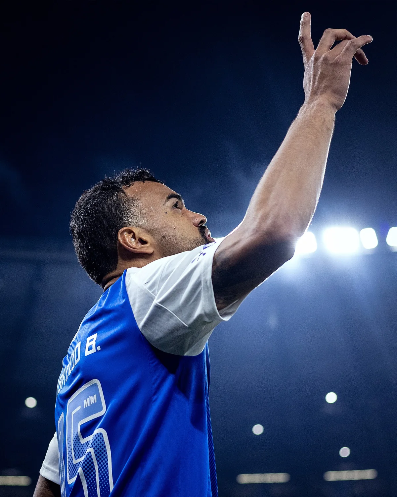
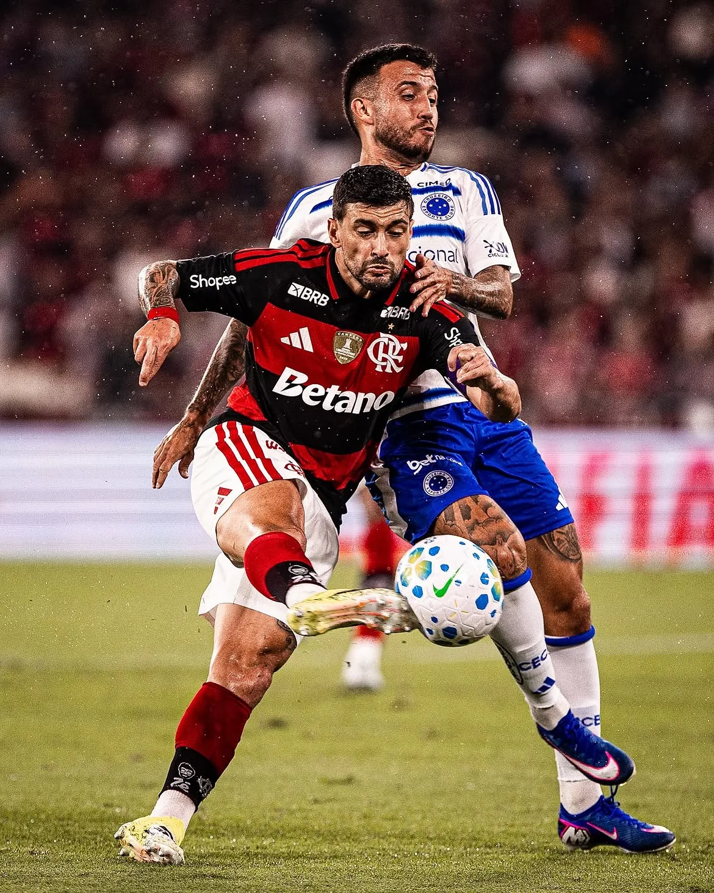

PARTIDOS · 31 LIGAS
Centro de Ligas
Agenda, temporada, tabla, jugadores y análisis desde cada fixture.
ExplorarInicia sesión con la cuenta asignada para acceder al motor completo de INCA STATS ANALIZADOR.
Temporada, localía, rivales, jugadores, árbitros y 48 métricas conectados al mismo histórico. Una lectura más clara antes de abrir cada análisis.
Agenda, temporada, tabla, jugadores y análisis desde cada fixture.
ExplorarÚltimos partidos, condición local/visita y líneas deportivas sin cifras inventadas.
DetectarMinutos, producción, per 90, rachas y contexto individual conectado a cada equipo.
Ver jugadores
Misma muestra, misma condición y métricas enfrentadas para leer diferencias reales.
CompararTarjetas, faltas, tiempos y perfil disciplinario desde un centro arbitral independiente.
ConsultarPlantilla, forma, entrenador, estadio, títulos y próximos rivales en una sola ficha.
Abrir fichaOrdena equipos por producción estadística y compara el nivel de la temporada activa.
Ver ranking
Configura equipo, muestra, condición y mercado con trazabilidad sobre el dato real.
AnalizarLa portada solo organiza el acceso. Cada módulo conserva su muestra, temporada y condición para que la lectura sea verificable.
Fixtures, tabla, jugadores, rachas y árbitros en una sola vista.
Inteligencia disciplinaria desde 2024. Historial real, tarjetas y faltas por equipo, tarjetas por tiempo y primera tarjeta.
Elige mercado, umbral y muestra. INCA STATS ANALIZADOR recalcula las rachas al instante según la temporada y la condición seleccionadas.
Los cálculos se ejecutarán sobre tu data local de la temporada activa.
Busca dentro del directorio real de jugadores y abre su análisis detallado desde el módulo Player Props VIP.
Abre esta sección para cargar los jugadores.
Perfil, forma reciente y próximo rival desde la temporada y la agenda actual.
31 ligas disponibles
La descripción se genera con los partidos registrados del equipo.
La app calcula con los datos disponibles según la muestra de partidos que elijas.
“Muestra de partidos” define L5/L10/L15/L20/L25. “Tamaño del ranking” define cuántos equipos quieres ver.
Selecciona contexto, métrica y línea. INCA STATS ANALIZADOR muestra promedio, muestra válida y el porcentaje exacto de partidos que cumplen la línea.
Escribe parte del nombre del club, elige el año, después liga/copa, condición y métrica. No necesitas encontrar primero su liga.
Busca los dos equipos. El resto de opciones se irá habilitando solo.
| FECHA | LOCAL | STATS | VISITANTE |
|---|
| FECHA | LOCAL | STATS | VISITANTE |
|---|